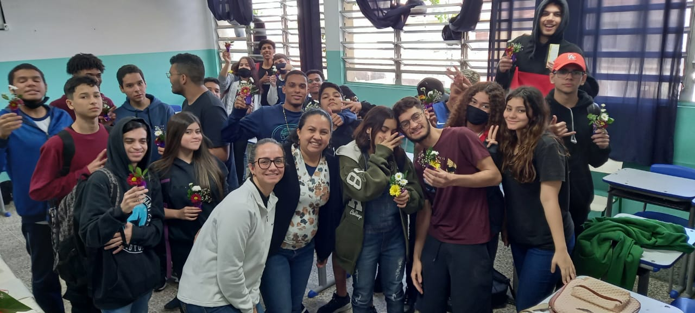
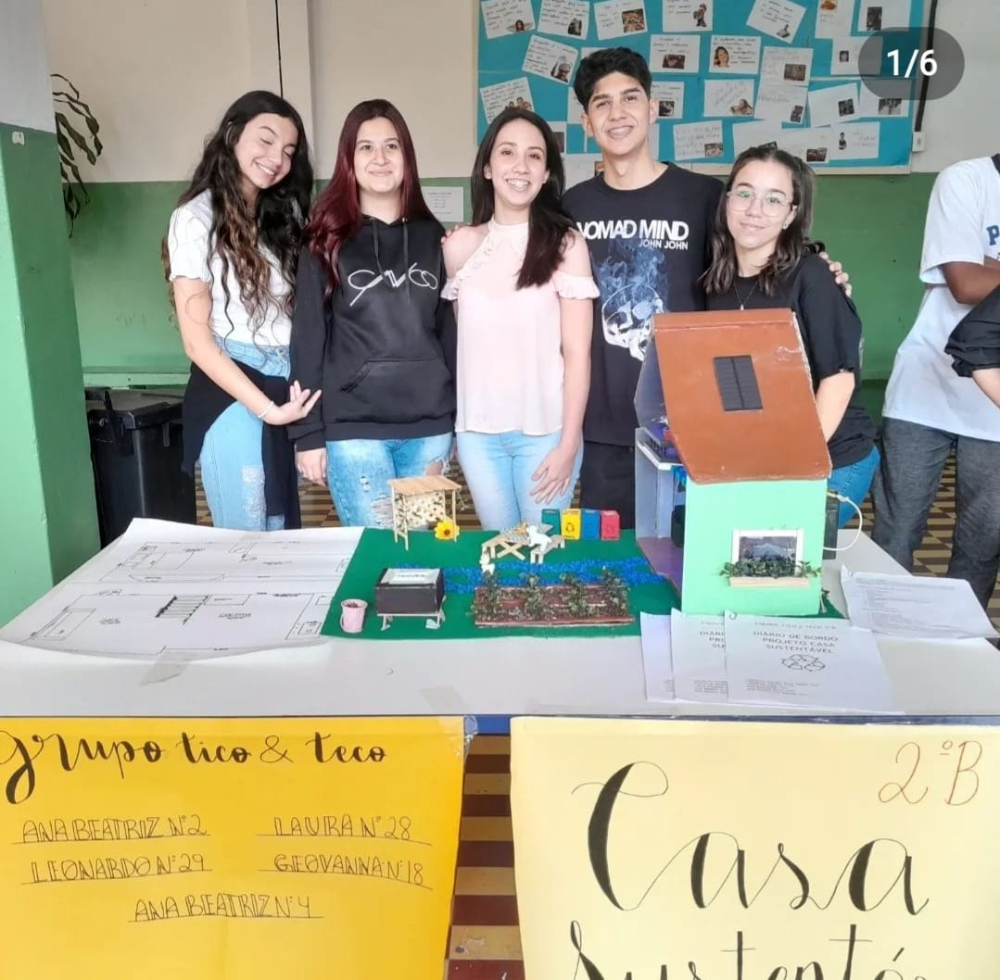
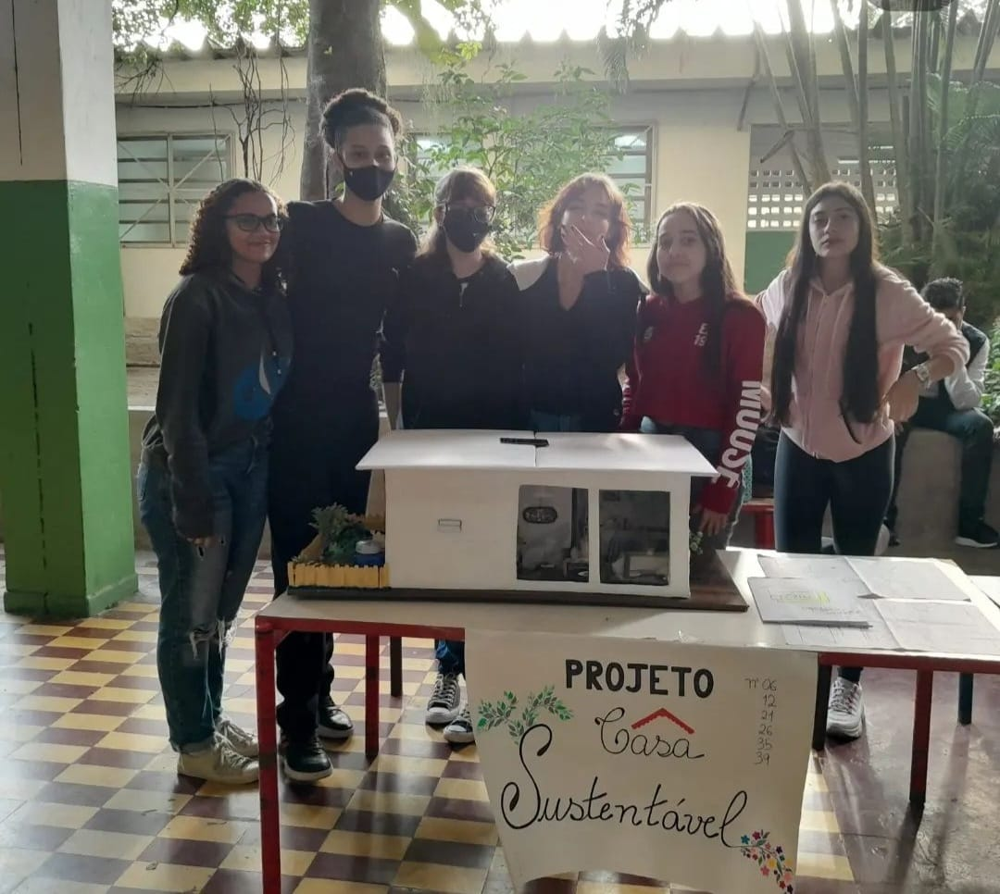

Protagonismo em alta
Marina Croce - 3-D
Estudantes do Primo acenderam os motores da criação, com projetos, aprendizados e reflexões criados em aula O ano ainda não acabou, mas o tempo não para principalmente para a galera do Primo Ferreira, estão envolvidos em diversas atividades propostas por seus professores em diferentes matérias.
A equipe do Jornal PF conversou com alguns professores da unidade para saber como foram as eletivas que encerram o primeiro semestre da escola, em que os estudantes tiveram acesso a diversos tipos de itinerários e também com a orientação de seus professores.
Dentro da eletiva Sustentabilidade e Inovação, a equipe formada pelas professoras Karina Pardo e Thais tinha como proposta orientar os estudantes a explorar o termo “pegada ecológica”, criado no Canadá para saber o quanto cada indivíduo deve consumir por dia de forma consciente para sobreviver sem desperdício, evitando um caos no planeta.
“Essa ideia inclui já no cotidiano da escola o uso de garrafas de água ou canecas pelos alunos e professores do Primo e dispensar o uso dos copos descartáveis”, explica a professora Karina. O destaque desse trabalho foi não utilizar uma folha de sulfite, ou seja, 100% digital, como a criação do site feita pelos estudantes para o projeto Sustentabilidade e Inovação. O site inclui todos os principais aspectos da Sustentabilidade: desastres ambientais, contaminação da água da chuva e reaproveitamento dos alimentos. Vale lembrar que o site foi criado numa iniciativa mundial do mês de junho, em que se celebra o Mês da Sustentabilidade. O evento dessa eletiva foi contemplado pela palestra dos professores mestres da Unifesp e que desenvolvem este curso na universidade.
O tema Sustentabilidade foi aplicado também nos projetos de arquitetura e construção pela professora Rosana Rocha com as turmas dos segundos anos, que propôs a construção de maquetes de Casas Sustentáveis. Os protótipos foram expostos numa culminância no pátio da escola, o que causou curiosidade da plateia. “Os estudantes fizeram várias pesquisas para saber como inovar quando o assunto é construir”, destaca a professora. As ideias vão desde casas inclusivas para pessoas com necessidades especiais, economia de energia e na hora de construir com materiais econômicos. Rosa ressalta que nesse novo tipo de ensino tanto os alunos quanto os próprios professores aprendem muito, o novo ensino médio para os professores é um novo jeito de aprender como ensinar.
Confira as fotos dos projetos inovadores:
 Projeto de vida
Como parte do Novo Ensino Médio, o componente curricular Projeto de Vida trata das competências socioemocionais com cada turma, sendo uma delas a escolha. No momento a professora estava passando a competência escolha. De acordo com a professor Sandra , a ideia do Projeto de Vida é refletir o aluno refletir sobre sua vida e suas escolhas, agregar às suas vidas novos olhares e principalmente despertar a autonomia neles.
“Hoje percebo uma mudança dos jovens com relação à essa matéria. E isso é positivo, pois a proposta é ensiná-los os alunos a terem responsabilidade e refletirem sobre diversos aspectos da vida”destaca ela.
Recentemente as professoras Sandra e a professora intérprete de Libras Edilene fizeram uma oficina de Ikebana (em japonês, flores vivas) com os alunos, na qual cada um levasse um pequeno vaso. O objetivo era trabalhar em sala o ato de amor feito com energias positivas, em que cada estudante oferecesse o vaso para si ou alguma pessoa importante.
Empatia
ma aula para a vida. Foi assim que a professora Vânia Tanaka descreveu o trabalho de conscientização realizado com as professoras e turmas de primeiros anos do período da tarde.
“Inicialmente queríamos algo que focasse a coletividade, de se doar com o máximo de empenho”lembra a ela.
A palavra de ordem replicada aos estudantes foi “fazer o melhor em qualquer circunstância”. E o símbolo desse projeto foi o coração e as ações de amor e respeito ao próximo essenciais em nosso cotidiano. No final da atividade, não poderia ser mais envolvente:
cada aluno utilizou tesoura, tecido e agulhas para confeccionar corações que seriam doados no evento “Ação do Coração”, que ocorre há mais de 10 anos em Santos e em outras cidades do mundo. “Eles foram surpreendidos, pois aprenderam a cortar tecidos, colocar linha na agulha e costurar, diferente deste mundo tão digital”ilustra Vânia.
Para ela, o mais gratificante foram o sorriso e a satisfação em cada sala, com alunos que confeccionaram seu próprio coração e colocaram sentimento, um ensinamento que levarão para o resto da vida.
“Nossos alunos podem e fazem muito, pois nessa ação em especial percebemos o retorno deles a nós professores que ensinamos a eles valores e aprendizados diariamente”finaliza Vânia.